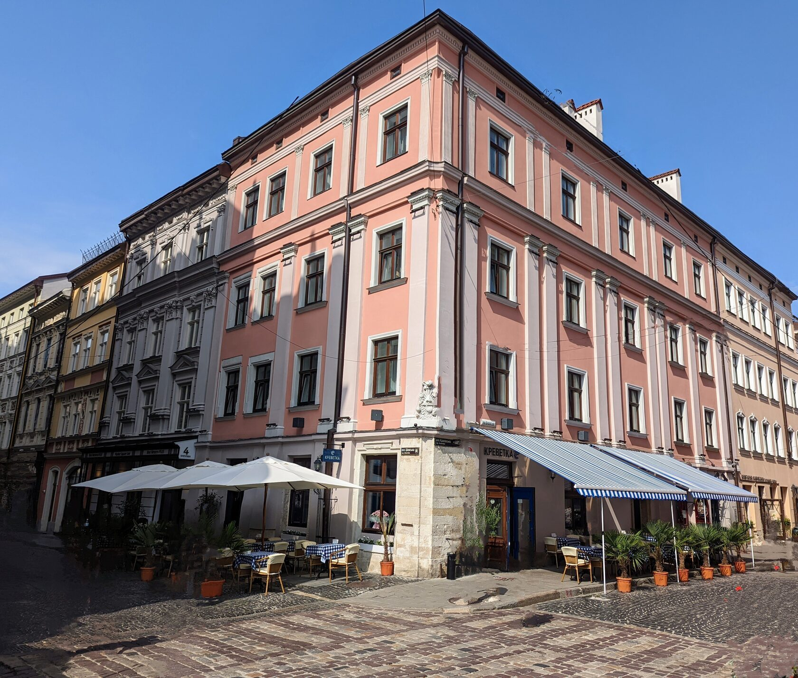
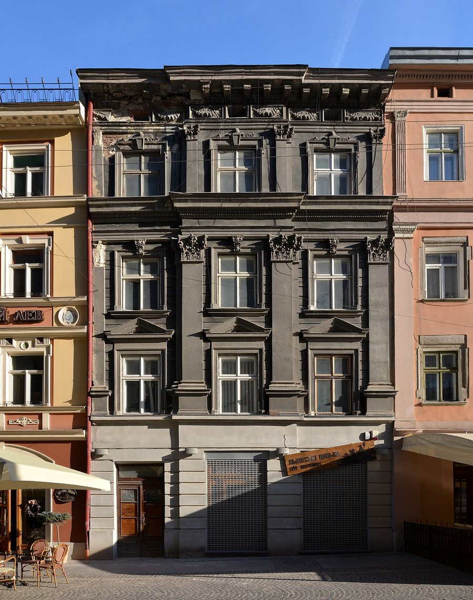
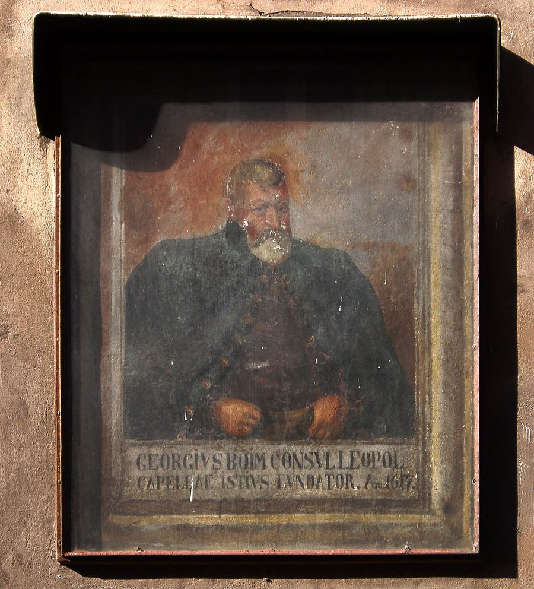
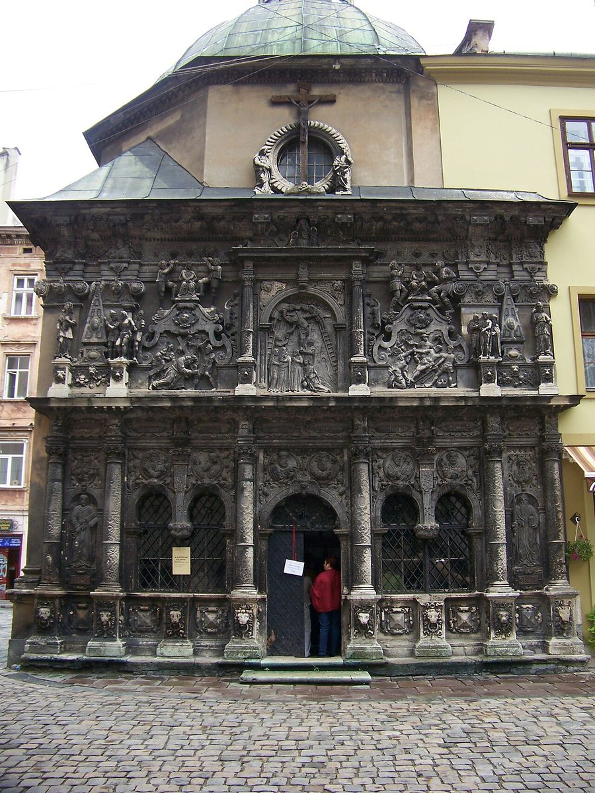
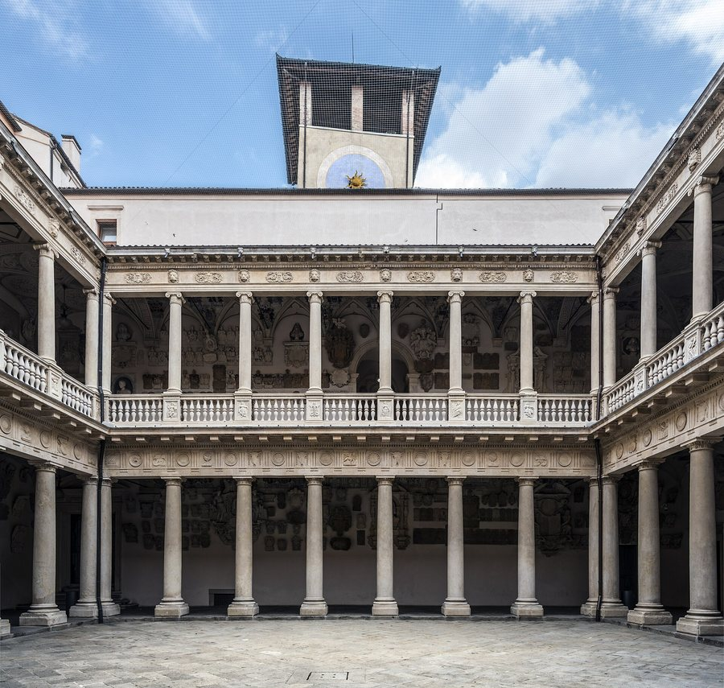
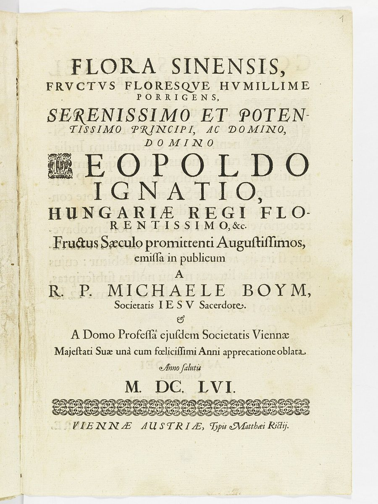
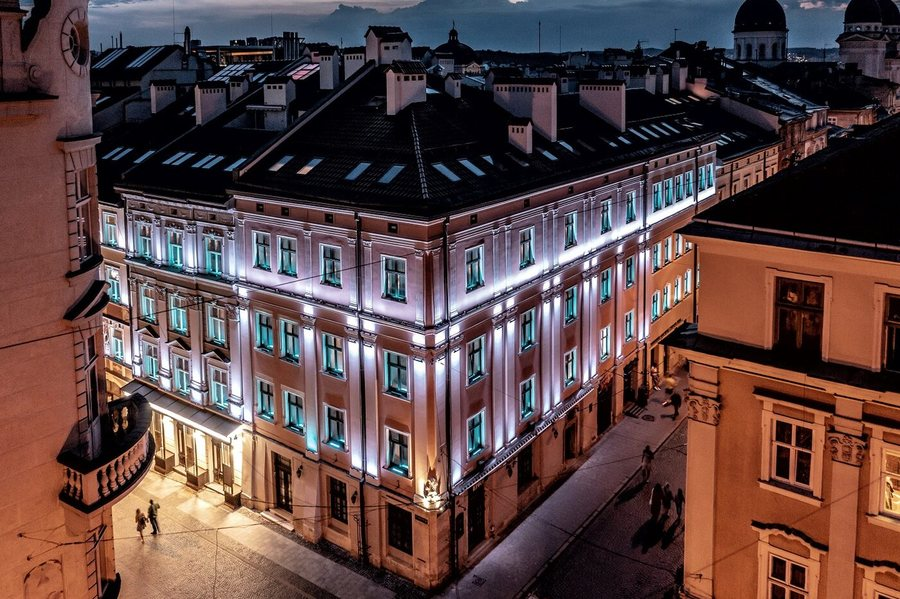
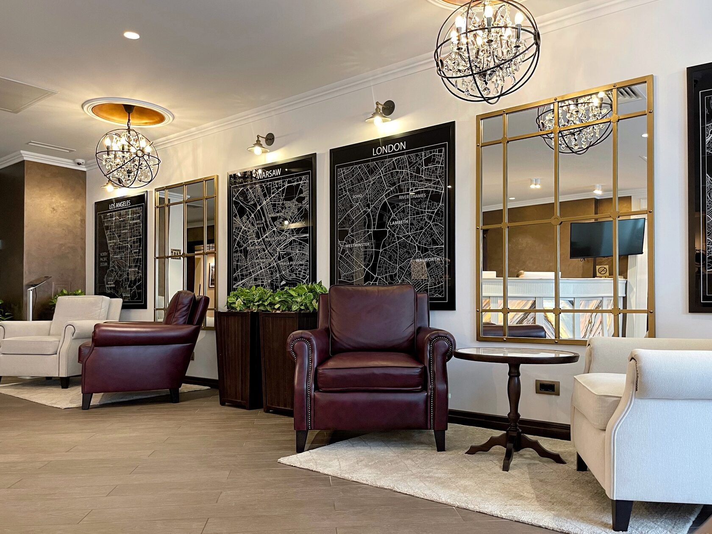
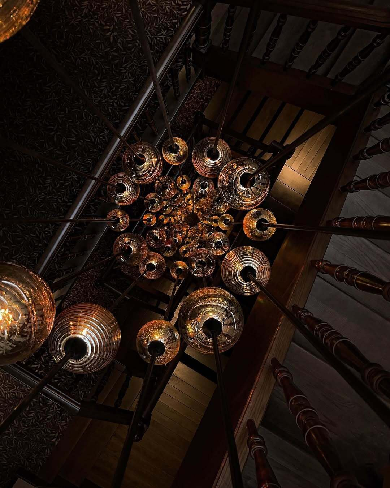
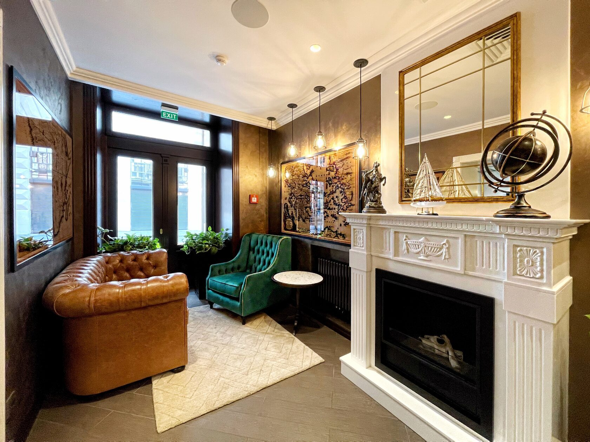

Історія готелю
Готель розташований в об'ємах чотирьох історичних будівель у Старому місті, внесеному до списку ЮНЕСКО у 1998 році.
Кам'яниця Дзюрджівська
Головна будівля готелю — будинок № 4 на вулиці Шевській, «Кам'яниця Дзюрджівська», пам'ятка архітектури XVIII століття.
Назва пов'язана з Дзюрджі Боїмом. Від кам'яниці часів Боїмів збереглися середньовічні підвали: у XVIII ст. будівлю перебудували, залишивши автентичні підземні конструкції. Під час реставрації зберегли просторову композицію, фасади, дерев'яні сходи, вікна й двері.

Будинки готелю
Готель розташований в об'ємах чотирьох історичних будівель. Тут — ті, назви й адреси яких підтверджені джерелами.
- 01
Кам'яниця Дзюрджівська
вул. Шевська, 4 — головна будівля, вхід до готелю
XVIII ст., на фундаментах давнішої кам'яниці
- 02
Кам'яниця Мосціцьких
вул. Шевська, 6
пивниці частково з кінця XVI ст.
Родина Боїмів і будинок
- 1576
Дзюрджі Боїм уперше у Львові
Купець угорського походження Дзюрджі (Георгій, Юрій) Боїм уперше прибув до Львова 1576 року при дворі Стефана Баторія, обраного королем Речі Посполитої. Згодом він став королівським секретарем, одним із найбагатших міщан Львова, райцею і бурмистром.

Фресковий портрет Георгія Боїма на каплиці Боїмів, 1617. Фото: Aeou, CC BY-SA 3.0 (змінено: розмір) - 1609–1615
Каплиця Боїмів
Над родинним гробівцем біля Латинського собору Боїми звели каплицю, яку будували в 1609–1615 роках. На її фасаді збереглися фрескові портрети фундаторів — Георгія Боїма та його дружини Ядвіги.

Фото: Red 81, CC BY-SA 4.0 (змінено: розмір) - 1613
Павло-Юрій Боїм — лікар короля
Син Дзюрджі Боїма Павло-Юрій (1581–1641) навчався в Падуанському університеті, став доктором філософії та медицини і придворним лікарем короля Сигізмунда III Вази. 1613 року повернувся до Львова, де був райцею, війтом і бурмистром.

Падуанський університет, де навчався Павло-Юрій. Фото: Didier Descouens, CC BY-SA 4.0 (змінено: розмір) - 1656
Михайло Боїм і «Flora Sinensis»
Син Павла-Юрія і онук Дзюрджі, єзуїт Михайло (Міхал) Боїм († 1659) став одним із перших європейських дослідників Китаю. 1656 року у Відні вийшла його праця «Flora Sinensis» («Флора Китаю»).

Титульна сторінка «Flora Sinensis», Відень, 1656. Polona / Wikimedia Commons, суспільне надбання - XVIII ст.
Кам'яниця Дзюрджівська на Шевській, 4
За даними Бюро спадщини, Дзюрджі Боїм оселився в будинку, що стояв на місці нинішньої Шевської, 4, у 1582 році. Теперішню кам'яницю звели у XVIII столітті на фундаментах давнішої, а від часів Боїмів збереглися підвали.
Кам'яниця на вул. Шевській, 4 до реставрації. Фото: Aeou, CC BY-SA 4.0 (змінено: розмір) - 2022
Відкриття готелю
У серпні 2022 року в історичних кам'яницях на вул. Шевській, 4–6 відкрився Best Western Plus Market Square Lviv. Преса назвала його першим в Україні готелем мережі Best Western.

Фото: Best Western Plus Market Square Lviv
Інтер'єри готелю



«Львів — це не місто. Це спосіб життя.»Юрій Винничук